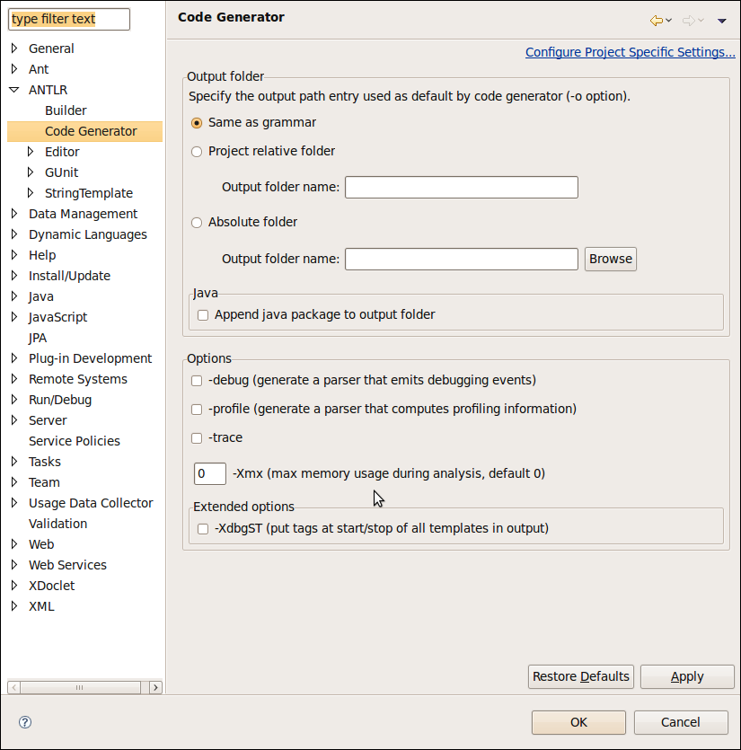

In this section, you will learn more about the code generator.
Note: the *.tokens files is always generated in the same location where the grammar file.
Window > Preferences > ANTLR > Code Generator preferences page
Project > Properties > ANTLR > Code Generator project preferences page
Grammar > Properties > ANTLR Code Generator grammar preferences page

The Same as grammar option put the generated files in the same location where your grammar is. After the code generation ANTLR IDE will refresh the project to see the generated resources. This is the default option.
The Project relative folder option put the generated files in a location relative to the project location. After the code generation ANTLR IDE will refresh the project to see the generated resources.
The Absolute folder option put the generated files in a location relative to the project location.
--myproject ----folder1 ------G1.g ------G2.g ----folder2 ------G3.g
Saving each one you will get:
--myproject ----folder1 ------G1.g ------G1Lexer.java ------G1Parser.java ------G2.g ------G2Lexer.java ------G2Parser.java ----folder2 ------G3.g ------G3Lexer.java ------G3Parser.java
Set the Project relative folder field to "src".
--myproject ----src ----folder1 ------G1.g
Saving G1.g you will get:
--myproject ----src ------G1Lexer.java ------G1Parser.java ----folder1 ------G1.g
Suppose that G1.g is a Java grammar and has a:
@header {
package mypackage.mysubpackage.myparser;
}
directive. If you want that ANTLR IDE scan these directive to generate
the resources in the corresponding folder, you need to check the
"Append java package to the output folder"
option. If you do that, you get this:
--myproject ----src ------mypackage --------mysubpackage ----------myparser ------------G1Lexer.java ------------G1Parser.java ----folder1 ------G1.g